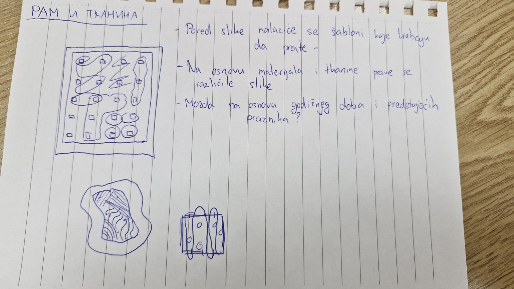

Radovi i primeri / Čas 9 / Reciklaža tekstila
Ram i tkanina
Anđela Deurić137/24
Dosije: Reciklaža tekstila
Čas 9
1 prikaz rada · Gradivo časa


Principi univerzalnog dizajna Univerzitet „Union — Nikola Tesla”, Beograd · Fakultet za graditeljski menadžment 2026/2027 · prvi (zimski) semestar · treća godina
Radovi i primeri / Čas 9 / Reciklaža tekstila
Anđela Deurić137/24
Dosije: Reciklaža tekstila
1 prikaz rada · Gradivo časa
